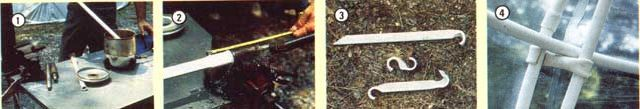

Helter-skelter plastic, pipes, and shelter . . . it starts to make sense when you look at . . .
Shelter is as basic to humanity's survival as sustenance is . . . yet our approach to structural design has often taken a more complicated path than seems necessary. The "build it solid as a battleship" attitude toward construction appears to have pervaded the thoughts of at least Western civilization for a good long time (after all, the castles of medieval Europe could be said to be as overbuilt as New York City's turn-of-the-century skyscrapers).
Of course, Mother Nature doesn't always take the same approach. Her handiwork typically expresses-even in all its beauty-a striking attention to calculation and succinctness that's so conspicuous it's easily overlooked. Such economy of design is apparent in something as simple as the shell of an egg: Its elongated spherical shape lends itself quite adequately to its purpose as a container . . . yet that form also has a compressional strength (end to end) that's far beyond what we might imagine when viewing the thinness of its calcium wall.
Furthermore, similar compositions exist in more intricate natural structures, reinforcing the "minimal material for maximum strength" principle. The wing of a dragonfly, for example, has a gossamerlike consistency . . .but maintains rigidity by virtue of a geometric network of filaments stretching throughout the whole. Similarly, a precise helix pattern appears within plant stems, cacti, and even the nucleotides that makeup DNA molecules.
GEOMETRY PERSONIFIED
It seems only natural, then, that designers would be eager to take full advantage of the models provided them by their environment. And to some extent, they do. The triangulated truss seen in construction parallels the configuration of a bird's metacarpal wing bone . . . and industrial research into the development and application of composite materials represents an attempt to simplify, and reduce the mass of, a large variety of structures.
Yet the concept can still be applied to many other areas of design . . . and the ring structures that we're about to introduce you to are one manifestation of that mode of thought.
When MOTHER's Eco-Village began its fifth season last summer, staffers were greeted by a strange sight. An aged Volvo wagon loaded far beyond capacity (with PVC pipe, poly tarps, trunks of reference material, and an industrial sewing machine, no less) was driven through our gates by a fellow who was barely discernible amid the moving avalanche of cargo.
The helmsman, as it turned out, was one Bernard Corey, inventor of a unique and patented method of using a network of tubular hoops, or rings, to provide support for a skinlike covering . . .thus producing a structurally sound but minimally encumbered form of shelter.
Corey called his creations "ring structures" . . . and explained that they achieve their strength from the fact that the individual hoops intersect at specific points to form, with the junctions, geometric configurations that aid in supporting load over an entire structure.
It's obvious that the simplicity, of the design is one of its most attractive features. However, several more obscure points are also well worth noting. First, the integrity of the form can be enhanced simply by adding more rings to the pattern. For example, it's possible to erect a functional dome with as few as five rings . . .but the incorporation of one or more supplementary hoops can provide additional rigidity and strength easily worth the added intricacy.
Second, regardless of whether five, eight, or more rings are utilized, the structure can be adjusted to take on a particular form. If, for example, a flattened dome with a large-diameter base is desired (perhaps for application as a cold frame), it's a simple matter to extend the bottom of the structure and compress the top. Conversely, if the goal is to create a stand-up storage area, the base can be constricted and the roof raised . . . to the point that the "foundation" can be smaller in diameter than the structure's girth. And, should an individual want to produce a dish-shaped configuration, the whole affair can be flipped inside out to form a concave dome with its apex at the ground!
Equally important, especially to those interested in keeping expense to a minimum, is the fact that the structure's components needn't be limited to specific-or even hightech-materials. Mr. Corey's experience indicates that almost anything resilient can be used to create the frame rings (including bamboo, wire, fiberglass, nylon, wood, plastic, aluminum, or synthetic rubber) . . .and, depending upon the application to which the assembly will be put, there's a similar flexibility regarding the covering, since any material that's fairly weather-resistant and can be sewn, taped, glued, or otherwise fastened together will be a valid candidate.
Finally, the fact that these structures don't have to be permanent can also be a point in their favor. Though they could (and most likely would, in the case of larger assemblies) easily be fastened to a slab or footers, their light weight and mobility are especially appropriate for short-term use. Yet those attributes don't necessarily become detriments in inclement weather: Even strong winds tend to pass over the basic flattened-dome shape, forcing it down rather than trying to lift it up.
A WOVEN FRAMEWORK
Probably the best way to understand the essence of the ring structure-short of actually constructing one-is to "walk through" a typical fabrication. As an example, we'll look at one of the first models that Bernard Corey assembled for our staffers . . . a six-ringer made from half a dozen lengths of off-the-shelf 3/4" X 20' CPVC pipe, and covered with an ultraviolet-treated clear PVC film.
Prior to starting the frame assembly, B.C. gathered a few basic tools and materials . . . including a hacksaw, a small electric deep fryer, some vegetable oil, a pair of pliers, a vise, a couple of homemade swaging tools, a ruler, a cookie thermometer, and a supply of cold water. Actually, even this equipment would be unnecessary if one wanted to buy commercially made couplings to join the ends of the pipe together . . . but to save that expense, Corey used his tools to enlarge one end of each ring tube, forming a socket that would accept the opposite end.
To accomplish this, he first heated the vegetable oil in the fryer to about 450°F, or enough to make the plastic pipe pliable after a minute of immersion. While each tube end was soaking, he gripped a swaging tool in the vise and, when the plastic became soft, slipped the pipe over the tool's point until about 2" of the plastic hose was enlarged. (Naturally, the swage used must be only slightly larger than the actual outside diameter of the pipe being formed.) Once each "bell" was made, he fixed its shape by dousing it with cold water.
After preparing the six pipes that would constitute the ring framework, the designer set about weaving them into the proper pattern . . . a process which, though it appears to be a major effort, involves little more than paying attention to what Corey terms the "alternate", or over-and-under, rule of thumb.
To start, he placed the first pipe's ends together to form a ring. (While a 2"-deep socket will form a secure joint, an application of PVC cement will guarantee its adhesion . . . and such a union can always be broken with a few deft strokes of the saw, at the expense of only a few inches of material.) With that done, he slipped the second ring in a counterclockwise direction over the first, then under it, before joining its ends.
Next, he took the third member and directed it-again in counterclockwise fashion-over the second ring . . . under, then over the initial ring . . . then under the second ring before fastening the third ring into a hoop. The fourth ring was woven through the second and third rings in the same manner.
Before introducing the fifth ring component, Bernard arranged the four existing hoops to describe a crescent . . . then passed pipe number five over the fourth ring . . . under, then over the third . . . back under the fourth . . . then-bypassing the second entirely-under and over the first. This, too, was coupled to form a circle.
The final, or sixth ring, as you might imagine, went through some pretty serious contortions. Beginning at the right-hand side of the layout, Corey first ran it over ring five . . . then under and over the fourth ring . . . back under ring five . . . on over the first ring . . . under and over the second ring . . . and under the first ring again. Once that path had been described, he linked the last hoop, and all six rings were arranged in a symmetrical fashion to form a circular shape on the ground.
Since this particular structure was to be a walk-in dome with a 10'-diameter base, it was a simple matter for Mr. C. to lift the center of the structure and push it to overhead height. Under normal conditions, just the tension of each ring against the others is enough to maintain the dome's shape. But to demonstrate how that framework could be inexpensively reinforced, Corey made up some simple clamps and ground pegs, using scrap pieces of PVC pipe treated, as before, with hot oil.
He used the same temperature and method as he had previously, except that instead of enlarging the pipes with a swage, he flattened them in the vise and then formed both ends of each clamp into a hook around the body of the tool . . . which had a diameter approximating that of the piping used for the framework. The finished supports, which locked between adjoining rings to keep them from sliding or spreading, were 6" (more or less) plastic scraps with hooks at each end. The ground pegs were perhaps twice as long, with one end hooked and the other cut at an oblique angle to make driving easier.
In addition to fabricating the clamps and pegs, Corey introduced another feature to the structure . . . one that plays an important role when the dome must support weight above and beyond that of a plastic or fabric covering. He called it the base or tensioning ring, and its function was obvious: Under load, of course, the six frame rings experience compressional forces. But-because of the structure's dome shape-these forces translate into an outward pressure at the point of contact with the ground. To keep that force in check, Bernard merely laced a seventh ring, which was over three times greater in circumference than the individual frame hoops, between all the rings at the base. Then he coupled its ends together with glue.
SLIP ME SOME SKIN
Like the framing material, the covering used on a ring structure is pretty much a matter of choice . . . but the intended use of the completed assembly does limit the builder's options somewhat. If the end product is to be a miniature greenhouse, for example, a transparent jacket is desirable. Although clear polyethylene would be the ideal "quick and dirty" selection, that material could be expected to last through only one season of direct sunlight. On the other hand, vinyl or butyl sheeting might serve for as many as three years but would be more expensive initially. And, while UV-treated clear PVC film could endure a decade, it likewise would require a considerable investment.
When protection or heat retention is important, of course, other materials would be preferable. These could range from multi-ply, nylon-reinforced screening or an insulated UV-treated pool covering to simple polypropylene tarp or canvas sheets.
No matter what the material, however, it must be sized carefully if it's to fit over the completed framework as a sealed unit. According to Corey, his most successful fittings were made by cutting the covering into segments shaped like the bottom of a clothes iron . . . a 6-1/2' X 10' structure accepts nine such 44" X 120" tapered plastic panels nicely. Of course, fewer or more sections could be used with equally satisfactory results, but Bernard suggests that anyone willing to be creative ought to experiment first with scrap cloth or paper or-better still-build a scaled-down model to try things on for size.
To join the individual segments at the edges, Corey used a rot-resistant nylon/polyester carpet thread. (Since a job of this size almost demands an industrial sewing machine, this stage can be farmed out . . . or the seams can be heat-sealed or cemented, using techniques applicable to the material being worked with.)
He also pointed out that zippered entryways and roof vents are relatively simple to install. To eliminate maintenance worries, the inventor suggested that synthetic materials be used exclusively.
THE PRICE IS RIGHT
Of course, when considering taking on such a project as this, the builder shouldn't ignore the "make do" approach. If he or she uses high-quality synthetics, the total cost of a ring structure like the one we've described may run as high as $150, but buying at wholesale or at manufacturer's prices (usually available when purchasing in volume) can reduce that tab considerably. And scrounging some of the material, such as the PVC pipe, will cut costs even further. One model Corey displayed had been made entirely of construction-site scraps that had been home-coupled together to achieve the necessary lengths and then covered with nylon remnants . . . for a total expenditure of about $30!
By the same token, if the dome's potential applications are taken into account, even the most expensive ring structures are a bargain in comparison with conventional buildings or shelters. And the plastic formation needn't be limited to moderate size, either: Mr. Corey told us that he's worked on structures several hundred feet in diameter and that the design can be altered to produce swimming pool enclosures, Quonset huts, garages, dwellings, canopies, parabolic dishes, and even envelopes for microcosmic environment control. He's now planning to experiment with a continuous-run pipe framework that could conceivably channel and warm water simultaneously. He hopes that this, coupled with the use of color-selective coverings, may encourage certain plants to grow beyond their normal seasons or in not-so-favorable climates.
And the adaptations don't have to stop there! Corey feels that the geometric network concept may have implications for concrete reinforcement or ferro-cement construction. At this point, no precise engineering calculations have been made . . . but neither has anyone offered to take up the challenge. Probably the best we can do is to plant the seed of this concept and let it develop . . . and who can say what might happen after that?
EDITORS NOTE: Because the entire range of ring structure sizes and designs cannot possibly be covered in a three page magazine article, Bernard Corey has just completed an 80 page book that, he explains, contains plans and a wealth of other information about ring construction and how it applies to domes, cylinders, Quonsets, half-domes, cones, and other configurations. His compilation also includes a listing of reliable materials sources . . . details concerning clamps, stakes, and ring joints . . . and a technical explanation of the concept. The book is available at a cost of $12 postpaid from Ring Structures, Dept. TMEN, P.O. Box 5215, Peoria, Illinois 60601.
Additionally, Mr. Corey is making available for $245 a complete, ready-to-assemble kit for a 6-1/2' X 10-1/2' six-ring dome covered with UV-treated clear PVC . . . and is also offering cover and frame kits, accessories, and free information from the same address.
|
 STAFF PHOTOS [1] Hot vegetable oil makes the plastic pipe pliable enough to . . . [2] stretch over a swage and take a new form. [3] The heating technique can be used to make ground pegs (top) and inter-ring clamps. [4] Both the homemade couplings and the clamps are simple to form and install. |
STAFF PHOTOS [5] This six-ringer was . . . [6] lifted to waist height, and then . . . [7] pushed up to form the skeleton for a walk-in dome. [8] A larger-diameter pipe was used to make this eight-ring structure. [9] Variety is the key to Corey's woven-ring structures. [10] A six-ring dome covered with UV-treated clear PVC film and reinforced with base and upper tensioning rings. [11] This camouflage version might serve as a hunting blind. |
|